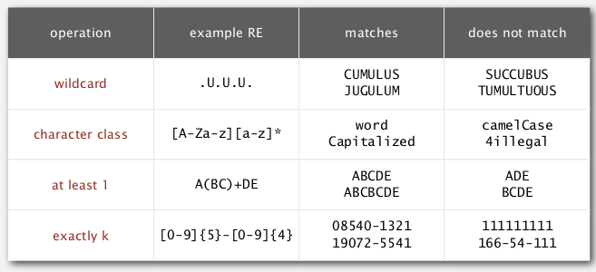
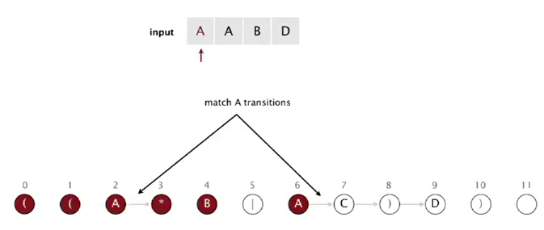
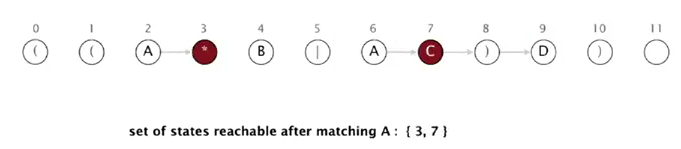

1. Regular Expressions
pb: pattern matching.

regular expression
Is a notation to specify a set of strings.
basic operations:
- concatenation
- or
- closure: "0 or more appearances of chars"
- parentheses

additional operations (added for convinence):

ex. [A-C]+ is equivalent to (A|B|C)(A|B|C)*.
吐槽名句:

2. REs and NFAs
duality between RE and DFA:
- RE: to decribe a set of strings.
- DFA: machine to ecognize whether a string is in a given set.
[Kleene's therom]
For any DFA, there exists a RE that describes the same set of strings;
For any RE, there exists a DFA that recognizes the same set of strings.

first attempt of pattern matching
(Ken Tompson) same as KMP — no backup.
basic plan:
- construct the DFA
- simulate the DFA with text
bad news: DFA may have exponential nb of states.
⇒ change to NFA (nondeterministic finite automaton).
NFA
- put RE into parentheses
- every char as a state (start=0, success=M) — 这里和之前的DFA很不一样: 之前是每个transition(edge)关联一个char, 这里是每个状态(node)关联一个char.
- epsilon-transition (red links below): change of machine state without scanning text
- match-transition (black links below): change state, but also have to scan next char in text, match transition is added after each alphabetic char
- success (accept) if any sequence of transitions (after scanning all text) end at state-M.
亦可理解为, DFA是每一条边对应一个可能的(字母表内的)char, 而NFA只有match-transition对应于pattern里的(alphabetic) char, 其他epsilon transition的边对应空字符串(也就是epsilon string).

example:
is "AAAABD" a match ?
→ yes. (和上一节substring的插图进行一下比对, 还是有很大不同)

pb: non-determinism
How to determine whether a string is a match of a NFA (ie. how to select the right sequence of transition) ?
⇒ sysematically consider all possible transition sequences.
3. NFA Simulation
- state names: 0 to M. (M+1 states in total, M=length of RE string).
- match-transitions: store in array
re[](the match transitions are naturally in order of the array). - epsilon -transitions: store in a digraph
G
idea:
maintain a set of all state that NFA could be in after reading first i chars in text.
at each iteration: check all reachable state wrt the transitions, then update reachable states.

algorithm

(for the NFA above, 注意为了方便已经加了 必要的括号)
[Algo]
- initial:
rs(reachable state)=reachable state from state 0 (left parenthese) using epsilon trantisionsconsume a char in text:
nrs(new-reachable-states) = empty set- from all reachable state of this character: add next state using the match-transition to
nrs- add all reachable states (using epsilon transition) form the
nrsset tonrs- set
rs = nrs, and consume the next char in text- accept if at the end the state M is in
rs
concrete example
- init:

- when matching A from text: state 2 or 6

using match transition of A, we can get to state 3 or 7

if we add epsilon transitions:

so reachable states after reading 1st A are: 2, 3, 4, 7

- matching 2nd A from text: state 2
using match transition we can only get to state 3.

using epsilon transitions from state 3:

(the only state after matching A is state 2 3 4)
- etc...
或者直接看这张图:


reachability
All reachable vertices from a set of source vertices → just DFS.
⇒ directly use the API from the digraph section:

running time linear to E+V
Java implementation
API:
public class NFA{
private int M;
private char[] re;
private Digraph G;// digraph of the epsilon-transitions
public NFA(String regexp){
M = regexp.length();
re = regexp.toCharArray();
G = buildEpsilonTransitionGraph();// helper function to build the graph G
}
public boolean matches(String text);// does text match the regexp?
private Digraph buildEpsilonTransitionGraph();// private helper function
}
The function buildEpsilonTransitionGraph()will be attacked in next session, for now we focus on the NFA simulation code — that is, the mathes() method.
For simplicity let's assume we have a function reachableVertices(Digraph G, Bag<Integer> sourceSet) and reachableVertices(Digraph G, int source) that gives the reachable states from (a set of) source vertices, including the sources. Or we can directly use the DirectedDFS api as listed above.
public boolean matches(String text){ //does text match the regexp?
Bag<Integer> rechableStates = reachableVertices(G,0);// init reachable
for(char c: text){
Bag<Integer> newRechableStatesBymatch = new Bag<Integer>();
for(int i:rechableStates)
if(re[i]==c || re[i]=='.')
newRechableStatesBymatch.add(i+1);// match transition
rechableStates = reachableVertices(G,newRechableStates);//epsilon transition
}
return reachableStates.contains(M);
}
(代码虽然短但是这个过程我理解了好久.. 另外上面的代码有点伪).
Analysis
prop. the matches() method takes O(MN) time in worst case.
pf. N chars in text, each char can go through <= M states (DFS), and in the digraph, no node has >3 degree ⇒ number of edges <= 3M, so the time for each dfs is O(M), in total we have O(MN).
4. NFA Construction
→ construct the epsilon transition digraph.
buiding a NFA from a re (parsing)
- states in a NFA: one state per char, plus an accept state (state M)
- alphabet state: chars in alphabet (
A, B, C, D) → (implicitly) put a match transition to next state - metacharacters:
( ) . * |, 5 metacharacters in total
⇒ to deal with the metacharacters:
- paretheses
( )
simply put a epsilon-transition to the next state

- closure
*
星号前面只可能是字母(包括.)或者右括号), 所以分两种情况讨论一下, 需要向前看一位, 这里就比较subtle
for each * state, add 3 transitions as below:


- or
|
or符号肯定在一个括号里面
add 2 epsilon transitions wrt parethese:


以上就是NFA建立G的时候要处理的三种情形, 这三种情形都要知道一个左括号(lp)的位置 ⇒ use a stack !
implementation

- for alphabetic chars: do one-char lookahead → if next is
*, add transitions. - for left parenthese
(: add transition to next state, and push to stack - for or
|: add transition to next state, and push to stack - for right parenthese
): pop the stack to deal with or and lp; and also do lookahead.
code is not trival... look carefully:
private Digraph buildEpsilonTransitionGraph(){// private helper function
Digraph G = new Digraph(M+1);
Stack<Integer> stk = new Stack<Integer>();
int lp;
for(int i=0; i<M; i++){
if(re[i]=='|' || re[i]=='(')
stk.push(i);
if(re[i]=='(' || re[i]==')' || re[i]=='*')
G.addEdge(i,i+1);
else if(re[i]==')'){// need to pop until get a lp
int j = stk.pop();
if(re[j]=='|'){
lp = stk.pop();
int or = j;
G.addEdge(lp, or+1);// add edge for the `or` case
G.addEdge(or, i);
}
else lp = j;
}
// do the lookahead:
if(re[i+1]=='*'){
if(re[i]==')'){ // case 1 of closure: a rp before `*`
G.addEdge(lp, i+1);
G.addEdge(i+1, lp);
}else{ // case 2 of closure: an alphabetic char before `*`
G.addEdge(i, i+1);
G.addEdge(i+1, i);
}
}
}// go through each char in re
return G;
}
Analysis
prop. building an NFA takes linear time and space in M.
pf. for each char, the nb of operations is const.
真不愧是most ingenius algorithm we met in this course......
5. Regular Expression Applications
grep
"Generalized Regular Expression Print"
print out all lines (from stdin) having a substring of an RE.
⇒ equal to adding a .* to the beginning and end of the RE to make a match.
public class GREP{
public void main(String[] args){
String re = ".*"+args[0]+".*";
NFA nfa = new NFA(re);
while(StdIn.hasNextLine){
String line = StdIn.readLine();
if(nfa.matches(line)) StdOut.println(line);
}
}
}
the grep has NM worst case running time — same as brute force substring search — amazing...
grep application: crossword puzzles


regexp in other languages
- unix: grep, awk
- script: python, perl

- java:
String.matches(regexp)

Harvesting information
goal: print all substrings of input that match an RE.
use Pattern and Matcher class in java.util.regexp.
first compile the regexp, then build the matcher
→ so that we can iterate through all matches of the input using find() and group() of the matcher

Caveat: performance NOT guaranteed !

→ exponential time growth!

Not-so-regular expressions
"not rugular" means Kleene's Th doesn't hold
→ efficient performance not tractable......
back-reference
\1 matches subexpressions that was matched earliser
limitations of regular languages:

Summary
the substring and regexp are examples of compilers ! (from string to a NFA/DFA/bytecode)


Comments !